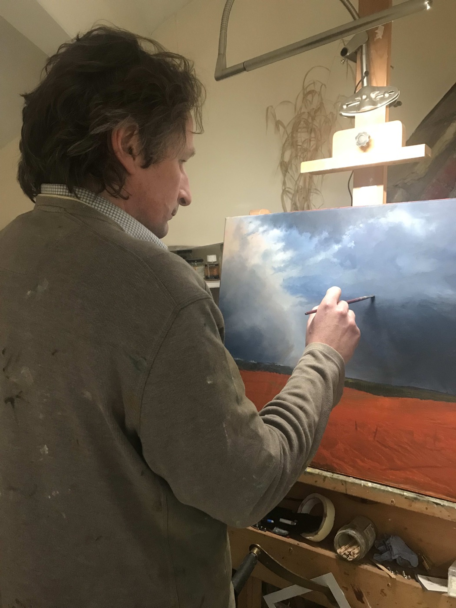

Original Oil Paintings of the Yorkshire Dales
I'm Jonathan Smith — a self-taught landscape painter, born and bred in Yorkshire. I paint the Dales, moors and coast in oils, chasing the light that makes a place feel like home.
When a break of light, a motif or a scene captures my attention, it becomes art — and it is my role to bring that into existence through paint, without embellishment, to convey my love to the viewer.
Jonathan Smith — Artist's Statement
Original Paintings
Paintings for Sale
Each piece is a one-off original oil, painted from the landscape of the Yorkshire Dales and Moors. Prints are available for many of these too — just ask.
Loading paintings…
Recently Sold
Gone to New Homes
A few of the originals that have already found collectors — a sense of what's sold, and how quickly a piece can go.

The Artist
Meet Jonathan
I'm a self-taught artist, born and bred in Yorkshire, and I've spent years learning to paint the county I love. I work mainly in oils, out in the landscape and back in the studio in Otley, trying to catch the particular light of the Dales — a misty ghyll, frost on a track, the last sun on an old abbey.
I believe true landscape painting is born out of love, but I also believe in its craft and science — and my work is a constant balance of the two. In 2026 all three of my entries were shortlisted in the SAA Artists of the Year, which meant a great deal.
Jonathan Smith
Commissions
A Place That Means Something to You
A favourite view, a family walk, the fields you grew up beside — I take commissions of the places that matter to people, painted in the same honest, unembellished way as my own work.
- We talk through the scene, size and framing
- I work from your photos or visit the location where I can
- You see progress before it's finished — no surprises
Prints
Fine-Art Prints
Love a painting that's already found a home? Many of my originals are available as high-quality fine-art prints — a way to own a Yorkshire scene at a gentler price.
- Giclée prints on quality art paper
- A range of sizes to suit your wall
- Just ask which paintings are available as prints
Buying With Confidence
Delivery & Returns
How is my painting packaged and delivered?
Every original is carefully wrapped and packed by hand before it leaves Otley. Local collection can also be arranged — just mention it when you order.
What if it's not quite right?
If a painting doesn't work out, get in touch within a few days of receiving it and we'll sort out a return — please get in touch before sending anything back.
Can I ask questions before I buy?
Want more photos, exact colours or a size check against your wall? Ask before you buy — email me any time.
Get in Touch
Interested in a Painting?
Whether you'd like to buy an original, ask about prints, or talk through a commission — I'd love to hear from you. Drop me a message and I'll get straight back to you.